2 Lecture 1:
3 Embedded Linux Introduction
3.1 Slide 1: Introduction
- Narrative: “Welcome to the Embedded Linux course. In this lecture, we’ll introduce you to the basics of embedded systems, the role Linux plays in them, and how these concepts underpin more advanced topics such as real‑time operating systems. Today’s session sets the foundation for everything that follows.”
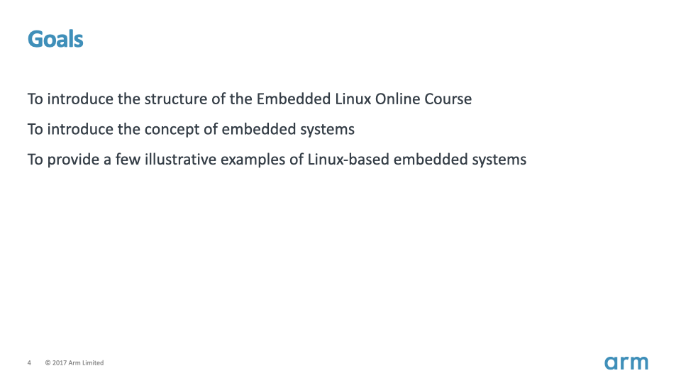
- Segue: “Let’s begin by taking an overview of the course structure to see where this lecture fits in.”
3.2 Slide 2: Course Structure
Narrative: “These slides outline the modules we’ll cover over the duration of the course—from an introduction to embedded systems and Linux-based system components to deeper dives into kernel internals, build processes, and eventually, RTOS topics. Today’s lecture is designed to provide you with a strong base in understanding what an embedded system is, and why Linux is such an important part of that ecosystem.” 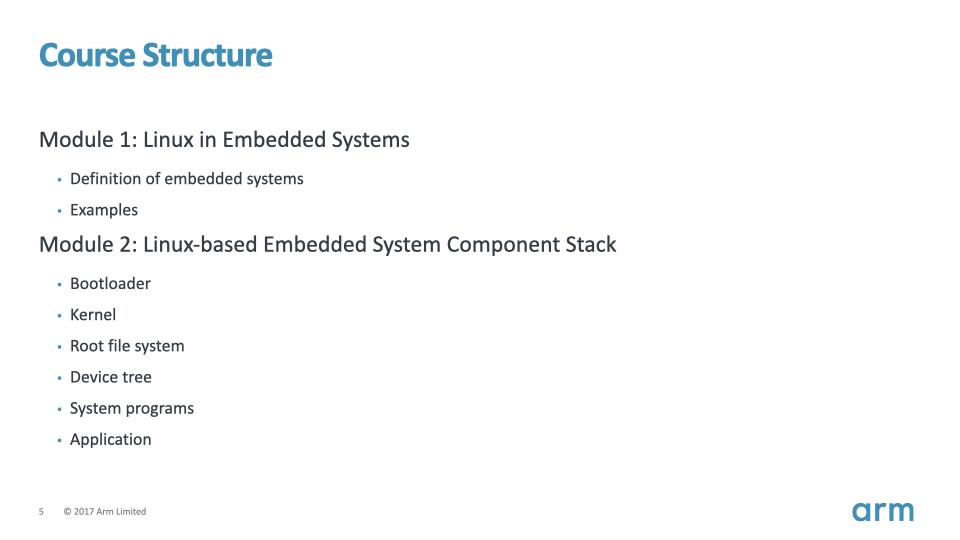 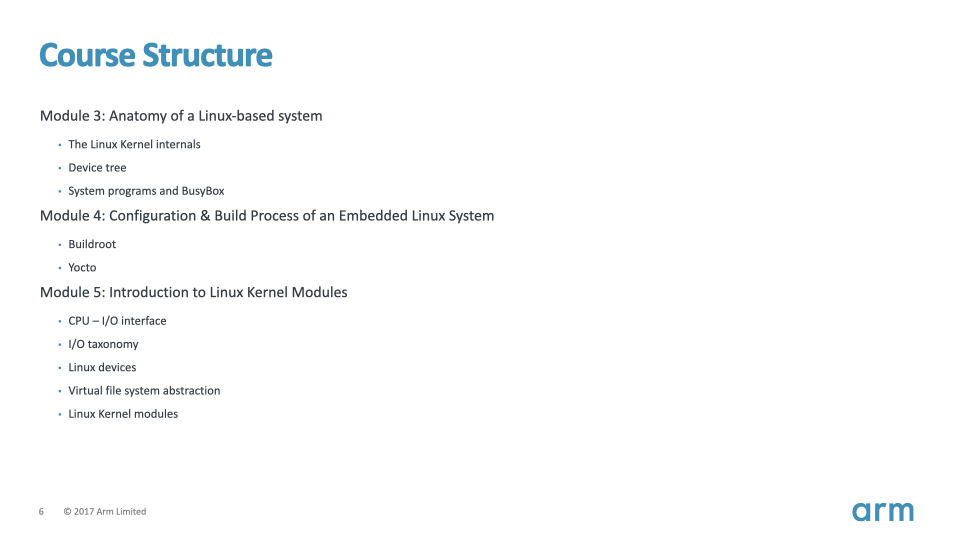 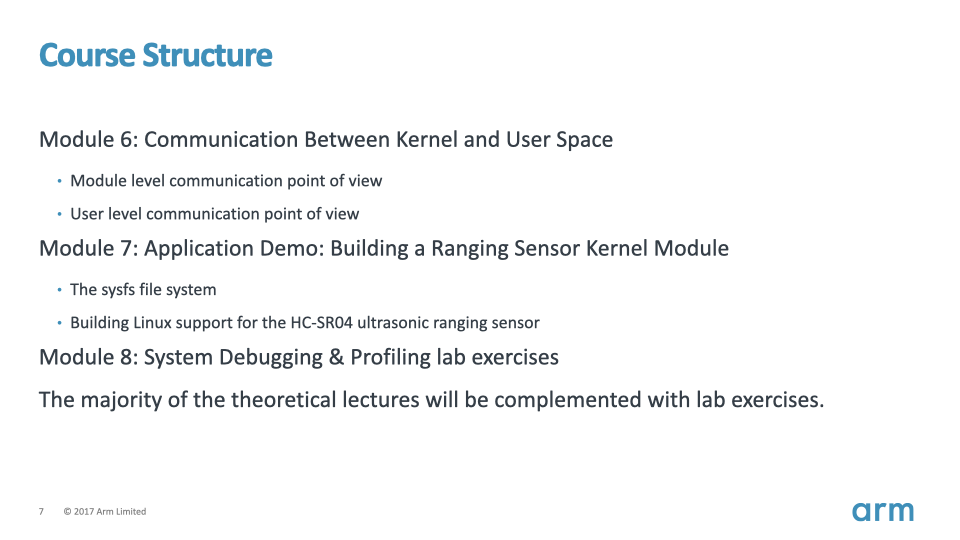
Segue: “Now that you know the roadmap, let’s explore the fundamentals by defining what an embedded system actually is.”
3.3 Slide 3: What Is an Embedded System?
- Narrative: “Here, we define an embedded system as a special-purpose computer designed to perform dedicated functions within a larger system—like an electronic control unit in an internal combustion engine. By focusing on a single purpose, these systems are optimized for efficiency, reliability, and cost-effectiveness.”

- Segue: “With that definition in mind, let’s now understand why the term ‘embedded system’ was coined in the first place.”
3.4 Slide 4: Why “Embedded System”?
- Narrative: “This slide explains the origins of the term ‘embedded system.’ Coined in the 1960s and 70s, the term originally described computers that were ‘embedded’ within larger electromechanical systems. Early examples include missile guidance systems and industrial controllers, where real-time performance, dedicated functionality, and resource constraints were critical.”
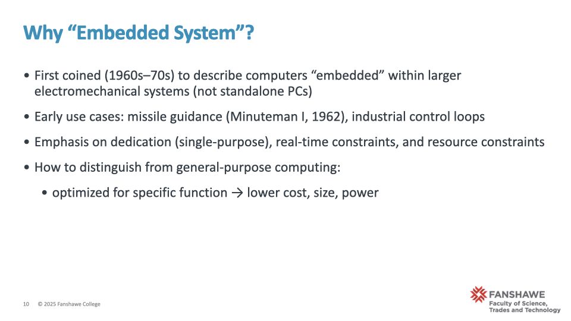
- Segue: “Understanding this history helps us see the broad impact of embedded systems—next, we’ll look at the diverse domains where these systems are used.”
3.5 Slide 5: Embedded Systems Across Domains
- Narrative: “Embedded systems are everywhere—from automotive control systems and medical devices to consumer electronics and industrial automation. This slide shows a few key examples to highlight the range of applications, emphasizing that while the underlying principles remain the same, the implementation can vary widely based on specific requirements.”
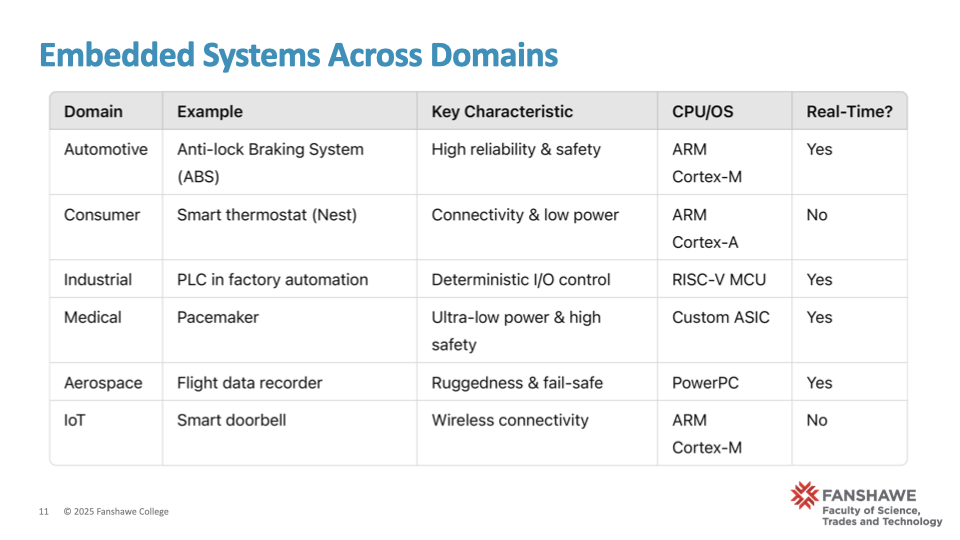
- Segue: “Let’s now break down the two core components that make up every embedded system.”
3.6 Slide 6: Embedded System Components – 2 Main Components
- Narrative: “Every embedded system comprises two major parts: the Application Software, which implements the specific functionality, and the Platform, which includes both the hardware and the basic software. Together, they ensure the system performs its dedicated task reliably.”
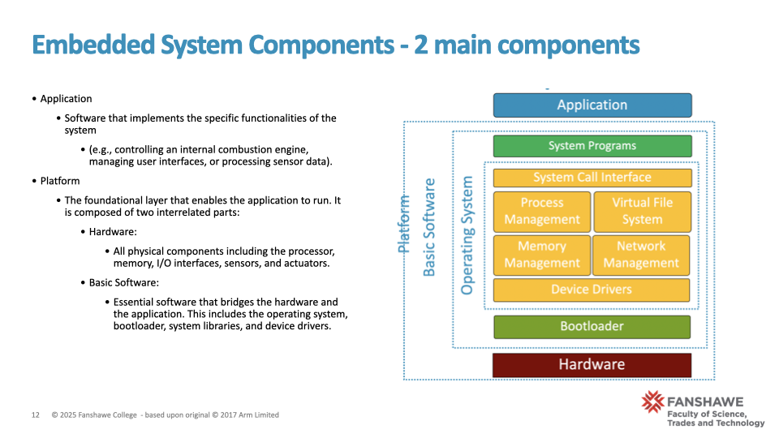
- Segue: “Next, we’ll discuss how the platform abstracts hardware details and manages resources through basic software functions.”
3.7 Slide 7: Hardware Abstraction and Basic Software Functions
- Narrative: “This slide focuses on how basic software provides an abstraction layer for hardware. It simplifies resource management by initializing hardware, managing I/O operations, and providing user-friendly interfaces like common system commands. This abstraction is critical for maintaining efficiency and portability.”
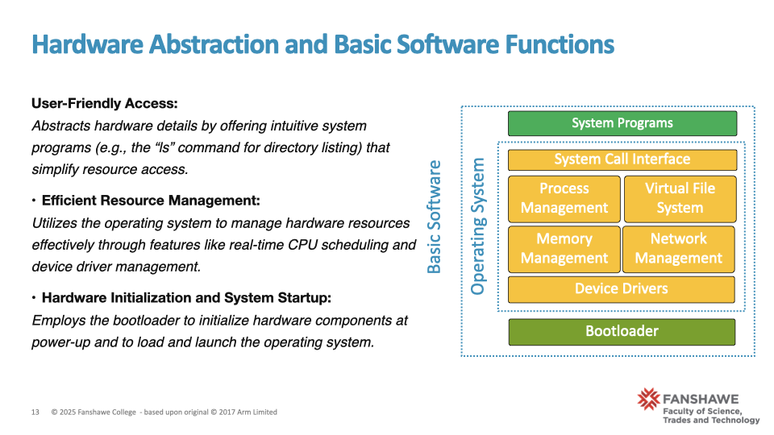
- Segue: “Building on this, we’ll now transition into the operating system’s role within the embedded system.”
3.8 Slide 8: Operating System
- Narrative: “Here we introduce the operating system as a vital component of the platform. The OS manages hardware resources, facilitates multitasking, and offers a structured environment for running application software. It also creates a clear separation between kernel and user space, ensuring system stability.”
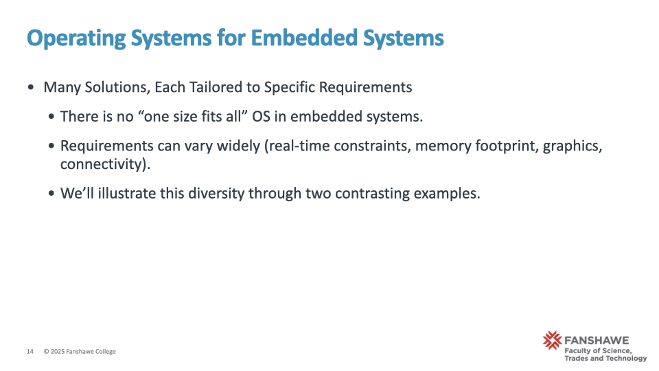
- Segue: “Let’s now review the different operating system solutions available for embedded systems and how they cater to various needs.”
3.9 Slide 9: Operating Systems for Embedded Systems
- Narractive: “This slide compares different operating systems used in embedded systems. On one side, we have deterministic real‑time systems like ARM RTX or FreeRTOS, which are designed for strict timing and low latency. On the other, we have more feature-rich systems used in applications like in-vehicle infotainment, where advanced graphics and multi-core processing are required.”
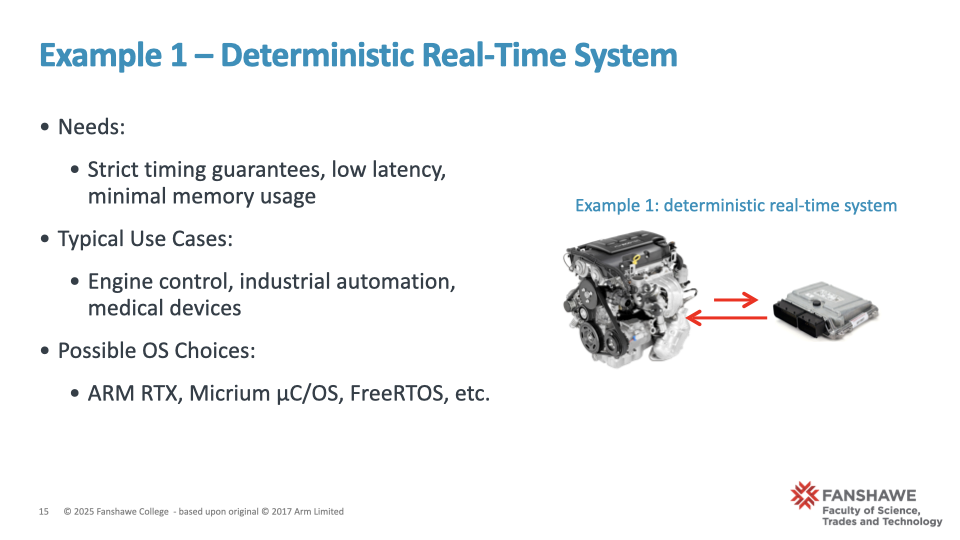 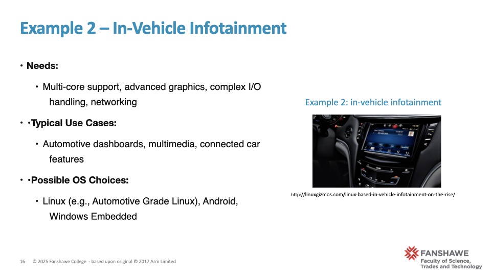
- Segue: “Since Linux is one of the most popular choices for embedded systems, let’s now focus on its role in this ecosystem.”
3.10 Slide 10: Linux in Embedded Systems
- Narractive: “Linux is widely adopted in the embedded world due to its robustness, flexibility, and open-source nature. It provides a rich environment for application development while supporting a wide array of hardware platforms. This popularity is driven by the community and the extensive ecosystem that supports continuous improvement.”
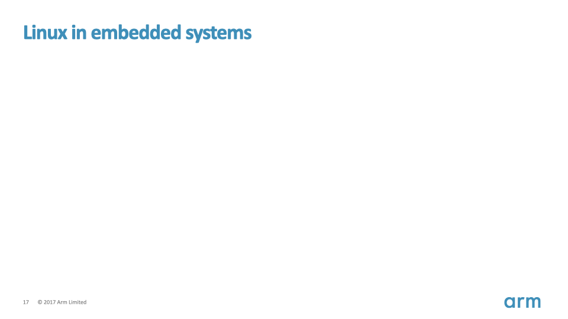
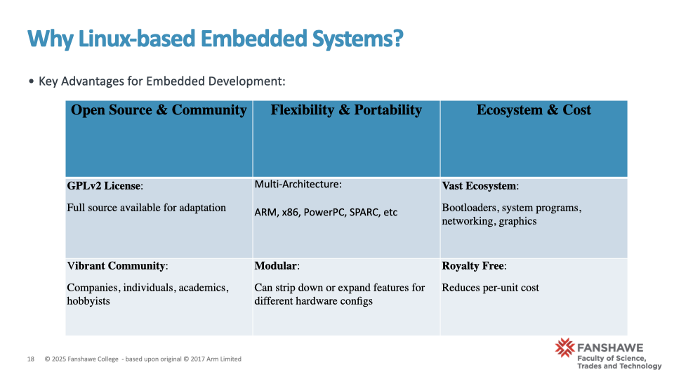
- Segue: “Before we explore the Linux kernel in detail, let’s take a brief look at the history of Linux to see how it evolved to meet the needs of embedded systems.”
3.11 Slide 11: A Brief History of Linux
- Narractive: “This slide outlines key milestones in Linux’s development—from Linus Torvalds’ initial announcement in 1991 to the evolution of Linux into a robust platform that supports everything from small embedded devices to large servers. This timeline helps us appreciate its maturity and versatility.”
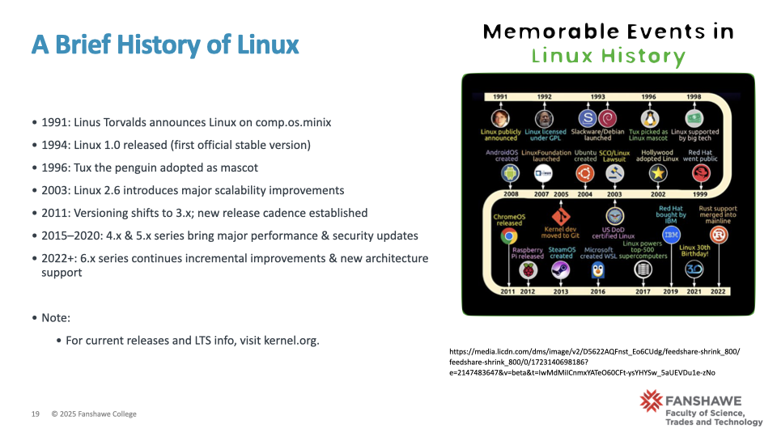
- Segue: “Now that we understand its evolution, let’s dive into what the Linux kernel actually is and why it’s central to Linux-based systems.”
3.12 Slide 12: What Is the Linux Kernel?
- Narractive: “The Linux kernel is the core of the operating system—it manages system resources, handles process scheduling, memory management, and provides essential services through system calls. Though it’s just one part of a complete operating system, its reliability and performance are critical to the overall system.”
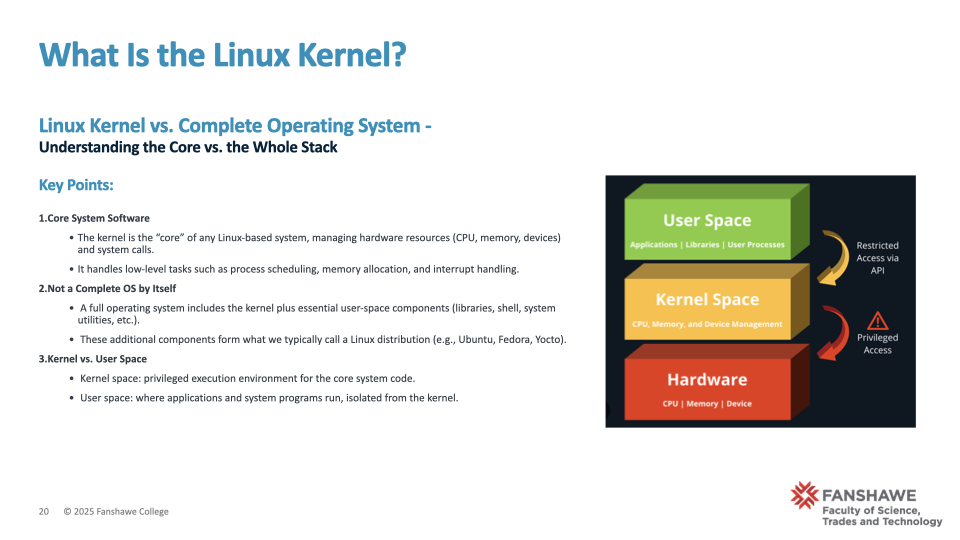
- Segue: “This naturally brings us to the concept of Linux distributions, where the kernel is packaged with additional software components.”
3.13 Slide 13: What Are Linux Distributions?
- Narractive: “Linux distributions bundle the kernel with user-space applications, libraries, and management tools, forming complete operating systems. There’s a wide variety—from general-purpose distributions like Ubuntu to those tailored for embedded systems, such as Yocto or Buildroot—each designed to meet different needs.”
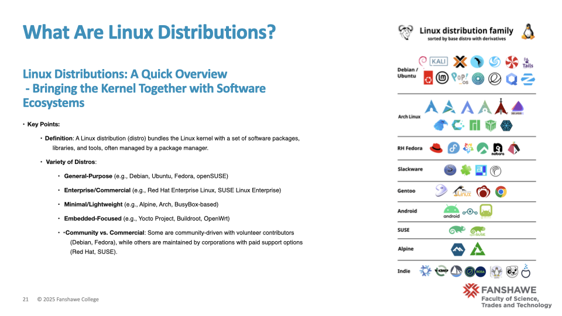
- Segue: “To select the right distribution for an embedded project, we need to consider several important factors.”
3.14 Slide 14: Factors to Consider When Selecting a Distro
- Narractive: “When choosing a Linux distribution for an embedded project, factors such as release model, package management, hardware support, community vs. commercial backing, and the ability to customize and minimize the footprint are critical. These factors ensure that the distribution aligns with the system’s requirements and long-term support needs.”
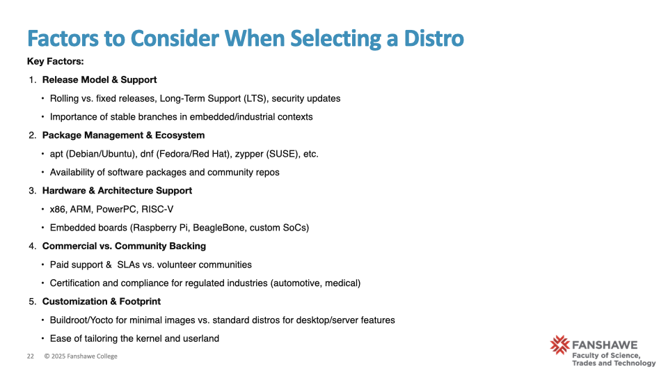
- Segue: “Now, let’s shift our focus to how Linux release cycles work, as this impacts the stability and security of the system over time.”
3.15 Slide 15: Understanding the Release Cycles
- Narractive: “This slide explains the different Linux kernel release categories: Mainline, Release Candidates, Stable, and Long-Term Support (LTS). Each category serves a unique purpose, from introducing new features to ensuring long-term reliability, which is especially important in embedded and real-time applications.”
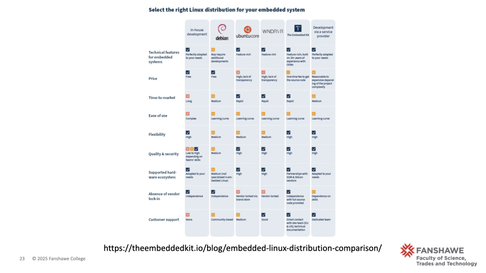
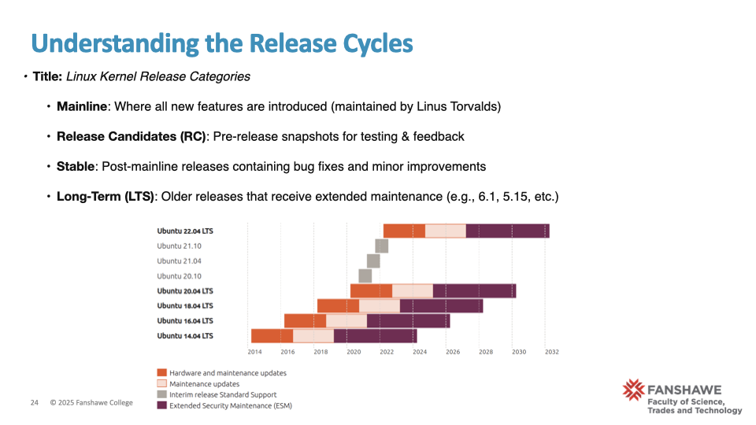
- Segue: “With this background, let’s now look at some concrete examples of Linux-based embedded systems in action.”
3.16 Slide 16: Linux-based Embedded System: Example 1 – In-Flight Entertainment Systems
- Narractive: “In this example, we examine how Linux powers in-flight entertainment systems. These systems require a reliable, scalable operating system that can handle multimedia processing and provide robust network connectivity while operating in a constrained environment.”
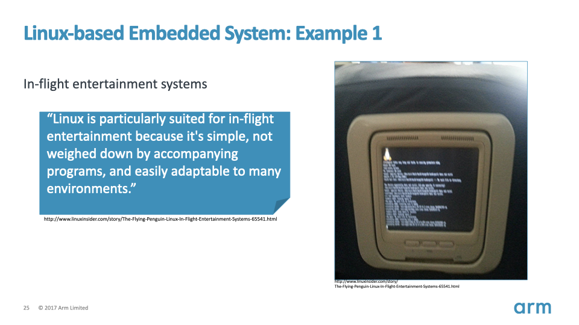 - Segue: “Next, we’ll see another example that shows the diversity of Linux applications in embedded systems.”
3.17 Slide 17: Linux-based Embedded System: Example 2 – Tim Horton’s Café and Bake Shop
- Narractive: “Here, we explore an unconventional use of Linux in an embedded system at a café and bake shop. This example highlights how Linux-based systems can be tailored to manage point-of-sale operations, customer interfaces, and even inventory management—all on a cost-effective platform.”
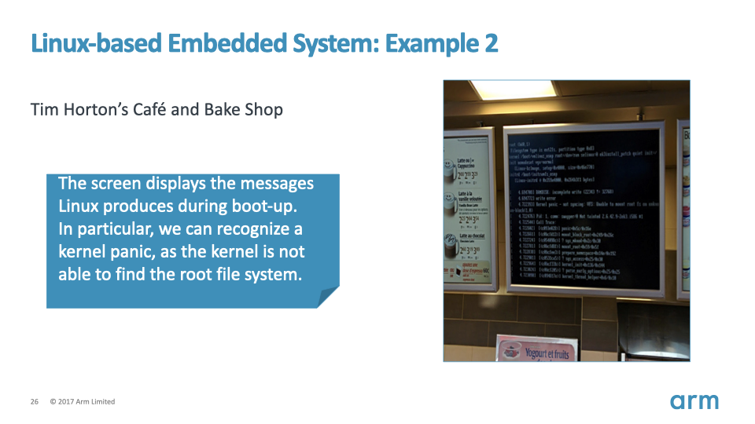
- Segue: “Let’s now broaden our perspective with yet another real-world example.”
3.18 Slide 18: Linux-based Embedded System: Example 3 – A Gas Station Pump
- Narractive: “In our final example, we look at a gas station pump. This system must operate reliably in outdoor conditions, handle payment processing securely, and integrate with various hardware components. Linux’s modular design and robust driver support make it an ideal choice for such mission-critical applications.”
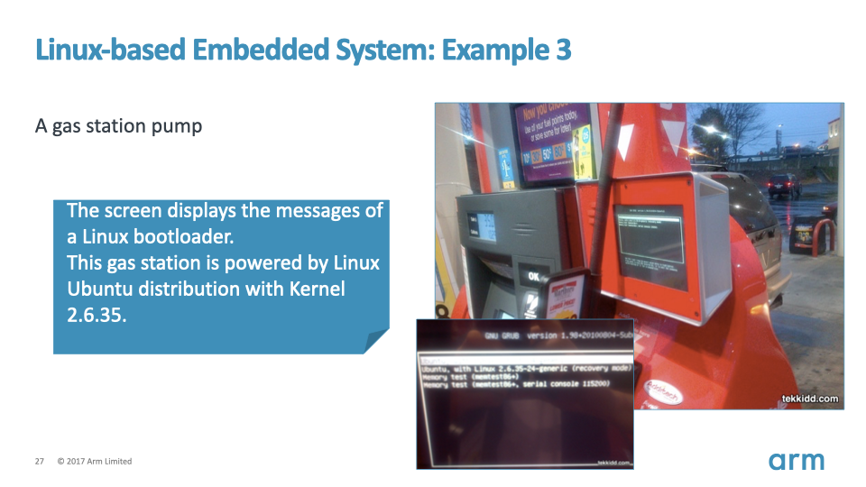
- Segue: “That concludes our introductory lecture. In our next session, we’ll begin to build on these fundamentals, diving deeper into the Linux-based embedded system component stack and, later on, specialized topics like real‑time operating systems.”
3.19 Mixed-format test bank based on the content of Lecture01.
- Use these questions for quizzes, review sessions, or self‑assessment.
3.19.1 Multiple Choice
- What is an embedded system?
- A general-purpose computer designed for a variety of tasks
- A computer integrated into a larger device to perform a dedicated function
- A high‑performance server used in data centers
- A desktop system with expandable hardware
- Why was the term “embedded system” originally coined?
- To describe computers optimized for multimedia processing
- To refer to computers that are integrated into larger electromechanical systems with dedicated functions
- To highlight systems with unlimited memory and processing power
- To classify systems that run open‑source software exclusively
- Which of the following is a primary component of an embedded system?
- Application Software
- Platform (including hardware and basic software)
- Both A and B
- A general-purpose operating system without any hardware-specific support
- Which Linux distribution or build system is particularly tailored for embedded systems requiring a minimal footprint?
- Ubuntu
- Fedora
- Buildroot/Yocto
- Red Hat Enterprise Linux
- What is the primary role of a bootloader in an embedded system?
- To manage user applications and provide a graphical user interface
- To initialize the hardware and load the operating system into RAM
- To perform system updates automatically
- To handle network communications exclusively
3.19.2 Fill in the Blank
- An embedded system is a __________‑purpose computer designed to perform dedicated functions within a larger device.
- The Linux kernel is considered the “core” of an operating system because it manages hardware resources and provides essential services through __________.
- A __________ is a packaged collection that combines the Linux kernel with user‑space applications, libraries, and tools to form a complete operating system.
3.19.3 Short Answer
Explain why the term “embedded system” was coined and provide one early application example. Your answer should discuss how the term was introduced to describe computers built into larger electromechanical systems (e.g., missile guidance systems or industrial controllers) to perform specific tasks under resource and real‑time constraints. -
Describe two key differences between a Real‑Time Operating System (RTOS) and a general‑purpose operating system. Consider aspects like scheduling guarantees, interrupt latency, determinism, and overall resource constraints in your answer. - How does hardware abstraction contribute to the efficiency and portability of embedded systems? Provide one specific example mentioned in the lecture.
Your answer might include discussion of the role of system libraries and device drivers (e.g., using a common system program interface like “ls” to abstract low‑level hardware details) and how this abstraction simplifies software development across different hardware platforms.
3.20 Answer Key (For Instructor Use)
3.20.1 Multiple choice answers:
- B B C C B
3.20.2 Fill in the blank answers
special
system calls
Linux distribution or distro
3.20.3 Short Answers
Answer should mention that “embedded system” was coined to denote computers integrated into larger systems with dedicated tasks (e.g., missile guidance systems, industrial control), emphasizing real‑time and resource-constrained applications.
Answers may include: RTOS typically offers deterministic scheduling guarantees and minimal interrupt latency, while general‑purpose operating systems prioritize throughput and may not guarantee real‑time performance.
An acceptable answer would note that hardware abstraction, provided by libraries and device drivers, hides the complexity of the hardware from application software. For example, using standardized system programs (like “ls”) lets developers write code independent of specific hardware details, improving portability and efficiency.